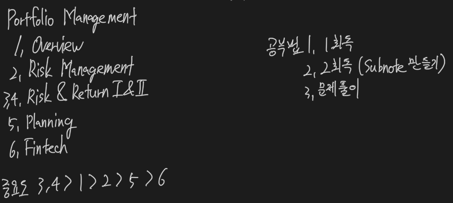

Portfolio Management

Portfolio Approach

- The portfolio perspective refers to evaluating individual investments by their contribution to the risk and return of an investor’s portfolio.
- reduce risk without reducing return
- 1950년 해리 마코뷔츠에 의해 상관관계가 1보다 낮은 자산을 편입한다면 risk를 줄일 수 있다는 이론이 제시됨
- Diversification ratio = portfolio 내 risk % / 개별 risk 합계 %
- risk 감소 정도
- Market이 정상적일 때 의미 있음
Process

- Planning
- Analysis, IPS
- Execution
- Asset type 결정, Top-down & Bottom-up
- Feedback
- 상황변화 체크, IPS update
- Over time, investor circumstances will change, risk and return characteristics of asset classes will change, and the actual weights of the assets in the portfolio will change with asset prices.
- The portfolio manager must monitor these changes and rebalance the portfolio periodically in response, adjusting the allocations to the various asset classes back to their desired percentages.
- The manager must also measure portfolio performance and evaluate it relative to the return on the benchmark portfolio identified in the IPS.
- IPS는 상황과 시간이 변해야 update
- 주기적 업데이트 아님
Investor

- Individual
- Endowment, Foundation
- 기금
- Long-term horizon
- High risk tolerance
- need little liquidity
- Bank
- Low risk
- need adequate liquidity
- Insurance
- 생명보험사 - long-term
- low risk
- Mutual Fund
- style마다 다름
- Sovereign Fund - 국부펀드
DC & DB

- Defined Contribution - 투자 위험은 Employee가
- Defined Benefit - 투자 위험은 Employer가
Investment Product


- Active - Manager 재량 추구
- Passive - 시장 따라가기 (Index)
Mutual Fund
- Pooled Investment
- NAV로 평가
Open-end Fund
- 언제든 NAV로 추가투자 및 환매 가능
- No load fee - 수수료 x
- load fee - 수수료 o
Close-end Fund
- Fund 사이즈 고정 → 추가투자 X
- Fund 지분은 주식처럼 거래 like equity
- NAV로 거래 안 될 가능성이 높음
Money Market Fund (MMF)
- Investment in short-term debt, low risk
Bond Mutual Fund
- Fixed Income
Equity Mutual Fund
- Equity
- passively managed - index fund
- actively managed
- manager가 직접 운용
- high turnover
- high tax
- Exchanged Traded Fund (ETF)
- Closed-end fund와 같이 수량이 정해져있음
- index 추종
- 장에서 NAV에 밀접하게 거래됨
- Tax 우대
- Separately Managed Account - single investor를 위한 계정
Hedge Fund
- 규제가 Mutual Fund보다 낮음
- 투자자 수 제한
- 전략이 다양함
- Long short
- Equity market neutral
- Event driven
- Fixed income arbitrage
- CB arbitrage
- Global macro
Private Equity or Venture Capital
- Buy out - 경영권 취득 → 현금창출 → restructuring → 재매각
- Venture Capital - start-up phase에 투자
성향

Risk management

- Risk 제거가 목적이 아님
- Identify risk tolerance → Measure the risk → Monitor & Modify
- Risk free rate보다 더 벌려면 → risk taking 필요
Frame-work

- Establishing processes and policies for risk governance.
- Determining the organization’s risk tolerance.
- Identifying and measuring existing risks.
- Managing and mitigating risks to achieve the optimal bundle of risks.
- Monitoring risk exposures over time.
- Communicating across the organization.
- Performing strategic risk analysis.
Risk Governance

- 운영 목적에 맞게 risk tolerance를 결정 from top level
Risk budgeting
- 위험을 고려해서 allocating from resources to assets
- risk들이 서로 Mix되어 최적의 수익률이 나올 수 있도록
- position limit은 risk budgeting이 아님 - operation 관리임
Risk Type

- risk들은 Not independent → 서로 상호 영향을 주고 받기 때문에 영향을 고려해야 함
Financial Risk
- Credit risk
- Liquidity risk
- Market risk
Non-financial risk
- Operational risk
- Solvency risk
- Regulatory risk
- Political risk
- Legal risk
- Model risk
- Tail risk
- Accounting risk
Individual risk
- Mortality risk - life insurance
- Longevity risk - live-time annuity
Method


- Standard deviation - volatility 측정, non-normal에서는 활용하지 않음
- Beta - Equity risk
- Duration - 이자율 변화에 대한 채권의 민감도
- Derivative risk (Greek)
- Delta - underlying asset의 변화
- Gomma - delta의 변화
- Vega - 변동성의 변화
- Rho - risk free rate의 변화
- Value at Risk (VaR)
- 특정 확률 안에서의 minimum loss
- Conditional VaR - 최소 손실을 넘어서는 손실 측정
- Risk 자체는 없앨 수 없음 - Diversification이 정답
- Return이 메인임 - 주어진 risk 하에서 return의 극대화
- Self Insurance - 적립금 계정 (충당금)
- Risk Transfer - 위험전이 (보험)
- Risk Shifting - 위험이동 (파생상품)
- Risk management는 항상 cost and benefit 고려 필요
Subjective Estimate
- Stress Testing - 특정 변수의 Extreme 값 test
- Scenario Analysis - 변수들의 변화 test
Return Measure

Holding period return
- simply % of increase
- HPR = 기말 / 기초 - 1
Average return
- Arithmetic return - 산술평균
- Geometric return - 기하평균
- Compounded annual return
Other return
- Gross return - fee 차감 전
- Net return - fee 차감 후
- 둘 다 거래비용은 포함
Etc
- pretax nominal return
- After tax nominal return
- real return - inflation 고려
- Leveraged return - margin, debt 고려
Money Weighted Return

Characteristic

- Trade-off Between Risk and Return
- Small-cap
- high return, high risk
- T-Bill
- low return, low risk
- return
- Negative skewed, greater kurtosis (fat-tail)
- large downside
- frequent extreme result
- liquidity도 고려
- A examination of the returns and standard deviation of returns for the major investable asset classes supports the idea of a tradeoff between risk and return.
- small-capitalization stocks have had the greatest average returns and greatest risk over the period. T-bill had the lowest average returns and the lowest standard deviation of returns.
- Liquidity is an additional characteristic to consider when choosing investments because liquidity can affect the price and, therefore, the expected return of a security.
Basic Formula

- 무조건 모든 variance는 sample variance로 계산해야 함
- In the world of finance, we are typically analyzing only a sample of returns data, rather than the entire population. To calculate sample variance, using a sample to T historical returns and the mean of the observations.
- Covariance measures the extent to which two variables more together over time.
- Here we will focus on the calculation of the covariance between two assets’ returns using historical data.
- The covariance of the returns of two securities can be standardized by dividing by the product of the standard deviations of the two securities. This standardized measure of co-movement is called correlation.
Risk Aversion

- Risk Averse - 위험 회피
- Risk seeking - 위험 선호
- Risk neutral - 위험 중립
- Risk averse 투자자라도, 수익률이 충분히 높다면 Risky asset 선택
- If expected returns are identical, a risk-averse investor will always choose the investment with the least risk. However, an investor may select a very risky portfolio despite being risk averse; a risk-averse investor will hold very risky assets if he feels that the extra return he expects to earn is adequate compensation for the additional risk.
Portfolio standard deviation, correlation

Efficient Frontier

- For each level of expected portfolio return, we can vary the portfolio weights on the individual assets to determine the portfolio that has the least risk.
- These portfolios that have the lowest standard deviation of all portfolios with a given expected return are known as minimum-variance portfolios.
- Assuming that investors are risk averse, investors prefer the portfolio that has the greatest expected return when choosing among portfolios that have the same standard deviation of returns. Those portfolios that have the greatest expected return for each level of risk (standard deviation).
- The portfolio on the efficient frontier that has the least risk is the global minimum-variance portfolio.
Selection

- Utility function - 효용함수, risk and return 관련
- Indifference curve - 무차별곡선, risk and return의 조합
- 투자자들의 위험에 따른 요구수익률은 indifference curve에 그려진다.
- risk averse - 위험 증가에 따른 더 많은 수익을 요구
- More averse하다면 그래프는 더 steep
- risk free asset
- standard deviation = 0
- correlation = 0
- risk free asset + risky asset 조합 → portfolio standard deviation이 1차함수
- Capital Allocation Line (CAL)
- indifference curve와의 접점에서 optimal portfolio 찾음
- 사람마다 위험상향이 다르기 때문에 IC도 다르고, 최적 portfolio도 다름
- An investor’s utility function represents the investor’s preference in terms of risk and return.
- An indifference curve is a tool from economics that, in this application, plots combinations of risk (standard deviation) and expected return among which an investor is indifferent.
- In our previous illustration of efficient portfolios available in the market, we included only risky assets.
- Now we will introduce a risk-free asset into our universe of available assets, and we will consider the risk and return characteristics of a portfolio that combines a portfolio of risky assets and the risk-free asset.
- The line representing these possible combinations of risk-free assets and the optimal risky asset portfolio is referred to as the capital allocation line.
Implication


- Capital Market Line (CML)
- CAL과 Indifference Curve의 만남 → 개인마다 다르기 때문에
- The line of possible portfolio risk and return combinations given the risk-free rate and the risk and return of a portfolio of risky assets is referred to as the capital allocation line (CAL).
- Morden portfolio 가정 등장
- Homogeneous expectation
- 모두가 같은 Indifference curve를 가짐
- same portfolio를 선호 → market portfolio
- CML 등장
- A simplifying assumption underlying modern portfolio theory (and the capital asset pricing model) is that investors have homogeneous expectations. Under this assumption, all investors face the same efficient frontier of risky portfolios and will all have the same optimal risky portfolio and CAL.
- Lending - Risk free asset에 추가 투자
- Borrowing - risk free rate으로 빌려서 risky asset에 투자
- 시장이 효율적이면 passive investing (index)
- 시장이 비효율적이면 active investing (buy undervalue, sell overvalue)
- Every investor will use the same risky portfolio. When this is the case, that portfolio must be the market portfolio of all risky assets because all investors that hold any risky assets hold the same portfolio of risky assets.
- Under the assumption of homogeneous expectations, this optimal CAL for all investors is termed the capital market line (CML).
- The difference between the expected return on the market and the risk-free rate is termed the market risk premium.
- If we assume that investors can both lend (invest in the risk-free asset) at the risk-free rate and borrow (as with a margin account) at the risk-free rate, they can select portfolio to the right of the market portfolio.
- Investors who believe market prices are informationally efficient often follow a passive investment strategy.
- Such investors will not use the weights of the market portfolio but will invest more than the market weights in securities that they believe are undervaled and less than the market weights in securities which they believe are overvalued. This is referred to as active portfolio management to differentiate it from passive portfolio management strategy that utilize a market index for the optimal risky asset portfolio.
Systematic Risk

- Portfolio risk는 포트폴리오 내 개별 리스크의 모든 합보다 작음
- Unsystematic risk - 분산투자로 감소될 수 있는 Risk
- Systematic risk - 분산투자로 감소될 수 없는 risk
- Total risk = unsystematic risk + systematic risk
- 종목 수가 올라가면 unsystematic risk가 감소 → manager 재량으로 감소 가능한 risk
- Return reward는 오직 systematic risk로부터 온다.
Return generating model

- beta는 민감도
- 1개면 single factor model
- 2개 이상이면 multi-factor model
- beta에 따라 수익률이 변한다
Multi-factor model
- Macro economy
- Fundatmental
- Statistical
- 잘 안씀
- Data-mining issure
Beta

- beta는 시장 변화 대비 움직이는 민감도를 의미
- 시장과 개별 종목의 상관관계로 이해하면 됨
- systematic risk = beta
CAPM & SML

- CAPM = risk free rate + beta * (market return - risk free rate)
- Equity의 기대수익률을 측정함
- CAPM 주요 가정
- risk aversion
- utility maximizing investors
- frictionless markets
- one-period horizon
- homogeneous expectations
- divisible assets
- competitive markets
- CML과 SML의 차이
- CML은 total risk와 기대수익률과의 관계, efficient portfolio만 선 위에 표시됨, portfolio 위주
- SML은 beta와 개별종목 기대수익률과의 관계, 적절하게 평가된 점만 선 위에 위치, security 위주
- Given that the only relevant (priced) risk for an individual asset i is measured by the covariance between the asset’s returns and the returns on the market.
- we can plot the relationship between risk and return for individual assets using covariance as our measure of systematic risk. The resulting line is one version of what is referred to as the security market line (SML).
Application & Evaluation

- Equilibrium → expected return = required return
- expected return > required return → buy
- expected return < required return → sell
- 성과 평가 시 risk에 따라 return 조정 필요 (risk adjustment return)
- sharp ratio - total risk
- M squared - total risk
- Treynor measure - systematic risk
- Jensen’s alpha - systematic risk
Investment policy statement (IPS)

- IPS는 고객에 대한 이해 자료
- return, risk, and others
- Description of client
- Statement of the purpose
- Statement of duties and responsibilities
- Procedures
- Investment objectives
- Investment contraints
- Investment guidelines
- Evaluation of performance
- Appendices
IPS components
- Return objective
- absolute, relative
- Risk objective
- Constraints
- Evaluation, etc
Willingness & Ability

- Ability to take risk - 재무상태 기반, longer, wealth에 비례
- Willingness to take risk - attitude 기반
- Ability < Willingness → row risk
- Ability > Willingness → educate
Constraints

- Liquidity - 현금이 필요한 때 고려
- Time horizon - 투자기간, longer time은 more risk taking 가능
- Tax situation - 개인투자자에게 특히 중요
- Tax deferred - 출구과세
- Tax exempt - 입구과세
- Legal & Regulatory - 금융기관마다 적용되는 규제 고려
- Unique circumstances - 투자자별 특징 고려
Asset allocation

- After IPS, strategic asset allocation 결정
- 자산별 비중, risk and return, correlation 고려
- 과거에는 주식, 채권, 부동산 → 지금은 alternative investment 의 발달로 종목 증가
Role

- Tactical asset allocation
- short-term 이익을 위해 잠시 active 운용
- deviation 발생 가능
- 이후에 원위치
- Active 운용 → Risk up
- Active manager가 많으면 비효율 존재 가능 (excessive trading)
- Core-satellite approach
- passive (major) + active (minor)
ESG trend

- Environmental social governance를 잘 하는 기업에 투자하는 trend
- negative screening - 여긴 투자하지 마
- positive screening - 여기 투자하자
- engagement, active ownership investing - 주주로서 권한 행사
Fintech
- technology + finance
Big data

- big data
- potentially useful + 사회에서 생산 됨
- by data science로 갸공되어야 함
- quality 중요
- volume, velocity 등
- data process
- artificial intelligence
- Machine Learning
- Supervised - 인과관계 위주
- Unsupervised - data 구조 위주
- Deep Learning
Fintech appliation
- Text analysis
- Natural language processing
- Algorithmic trading
- Robo-advisor
Distributed ledger
- 분산원장
- BlockChain
- Cryptocurrency
- ICO
- Smart contract
- Tokenization